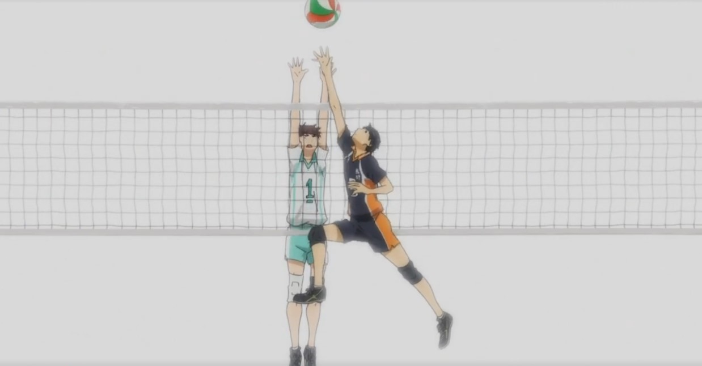

En la primera escena del capítulo, Kagesama (armador de Karasuno) logra hacer una jugada muy difícil de realizar, armar la jugada con una sola mano, para que luego, Hinata Shoyo (central de karasuno) pueda rematar y terminar la jugada. De esta forma, igualarían a el equipo contrario 24-24 y a partir de ahora, el equipo que consiga dos puntos seguido ganara el partido.
